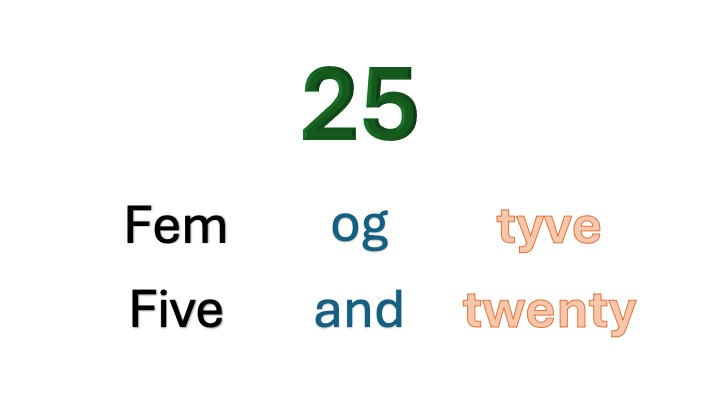

Danish can be a very difficult language to know or to even understand. However, a lot of words are similar to the
English language. Here we will be learning a few different types of words and phrases that are essential to daily
life in Denmark.
Here are a few of the most common words or phrases that would be beneficial to know.
| Hello! | Thank You! | I | You (subject) | You (object) | food | English | My name is... | I am ... years old |
|---|---|---|---|---|---|---|---|---|
| Hej! | tak! | jeg | du | dej | mad | engelsk | Jeg hødder... | Jeg er ... gammel år |
Now that you know a few words we can move onto numbers. We will start with 1 to 10.
| 1 | 2 | 3 | 4 | 5 | 6 | 7 | 8 | 9 | 10 |
|---|---|---|---|---|---|---|---|---|---|
| en | to | tre | fire | fem | seks | syv | otte | ni | ti |
Now we will count from 11 to 20. See the image to the right to see how double-digit numbers are structured
| 11 | 12 | 13 | 14 | 15 | 16 | 17 | 18 | 19 | 20 |
|---|---|---|---|---|---|---|---|---|---|
| elleve | tolv | tretten | fjorden | femten | seksten | sytten | atten | nitten | tyve |
Lastly, we will count by 10's to 100.
| 10 | 20 | 30 | 40 | 50 | 60 | 70 | 80 | 90 | 100 |
|---|---|---|---|---|---|---|---|---|---|
| ti | tyve | tredive | fyrre | helvtreds | tres | helvfjerds | firs | helvfems | en hundrede |
Now you know how to count in Danish! Now let's put together the phrase "I am (insert age) years old."
| I | am | your age | old | years |
|---|---|---|---|---|
| Jeg | er | (your age) | gammel | år |